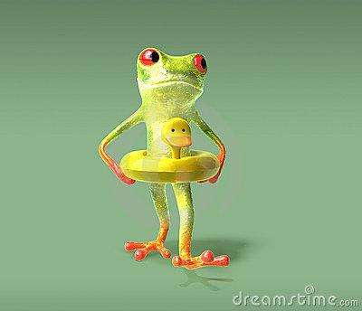

游泳使我精神焕发（5分）
我真的很快乐
绝对不是被逼的
我可太喜欢游泳啦
这绝对是真的哦
蛙泳配合需注意，腿臂呼吸要适宜；
两臂划水腿放松，收手同时要收腿；
两臂前伸腿蹬水，臂腿伸直滑一会；
划水头部慢抬起，伸手滑行慢呼吸。
蛙泳是一项水浴、空气浴和日光浴三者合一的运动和娱乐顶 目，对身体健康十分有益。蛙泳具有多种功能和实用价值。
- 享受三浴，延年益寿
自然界的空气、曰光和水是人体生命的源泉。人们在进行蛙泳锻炼时，能够充分享受空气、日光和水对人体的滋养，从而使 身体强壮，延年益寿。
- 塑造健美的体形
一些研究人体形体和形态的专家指出，蛙泳可以帮助人矫正某些不正常的体形，可以使身体各部位机体和肌肉得到均 衡和全面的发展。所以，经常参加蛙泳锻炼，有助于塑造一个健 美的体形
- 滋润皮肤并增加弹性
蛙泳运动在水中进行，水流和身体轻轻地摩擦，水中矿物质对皮肤慢慢地滋养，这促进了皮肤毛细血管中的血液循环和表皮细胞的代谢。如果蛙泳运动结束后抹上一些防晒霜或护肤霜，还可以使皮肤洁白柔嫩、光滑圆润，并富有一定的弹性。
- 增强心脏功能
经常参加蛙泳运动，能够使心脏得到很好的锻炼，如心肌逐渐发达、收缩能力逐渐增强，心脏功能也相应地增强，从而提高人体的新陈代谢能力。
- 增加肺活量
蛙泳运动对呼吸系统的影响很大。运动中的每次呼吸都需吸进大量的氧和呼出二氧化碳。经过长期的蛙泳锻炼，呼吸肌将逐渐发达，肺活量将逐渐增加。
- 提高体温调节的功能
从生理角度来讲，进行蛙泳锻炼时热量消耗大，新陈代谢加快，所以经常进行蛙泳锻炼的人，皮下脂肪增长得快，体温调节 系统的功能将逐渐增强。
- 防病治病
经过长期的蛙泳锻炼，能够增强肌体适应外界环境变化的能 力，抵御寒冷，预防疾病，所以经常参加蛙泳锻炼的人不易感冒。如果蛙泳与医疗体育配合，还可以治疗一些慢性疾病，如高血压、慢性肠胃病、关节炎、神经衰弱和轻度脊椎侧弯等。
- 泳员在滑翔姿势，身体接近水平。头部约80%沉于水中，脸微微向前，双臂伸展，掌心向著斜外侧。
- 捉水动作在水下约7~9寸处开始，双手作侧面的划动，在这时开始呼气动作。
- 双臂没有明显的屈曲，继续的划向外侧，呼气继续增加。
- 当泳员头部开始微微向上，肘关节开始屈曲，上臂开始旋转。
- 当双臂到达最大的宽度，肘屈约110度，这时高肘姿势是明显的。
- 头部继续上抬，当嘴部露出水面，最后呼气完成.双手开始向内，以完成最后的推进动作。
- 当双臂准备向后，吸气开始，肘部不要拉到肋骨下，膝关节开始屈曲，回腿动作开始。
- 嘴部闭上，吸气完成，双足被带向臀部，肘关节继续伸展，双臂继续向前移动。
- 回腿动作继续进行。
- 颈部屈曲，头部继续向下倾斜。双足背屈，双腿开始向后，推水动作，双臂回手动作。
- 双足推向后并开始并拢。泳员这时闭气，直至另一划臂动作开始。
- 双臂完全伸展，双手稍低于肩膊水平，双腿蹬水接近完成。当泳员完成蹬水，并集中使身体成为一直线。保持滑翔姿势短暂的时间，然后当感觉速度减慢，另一划臂循环开始。